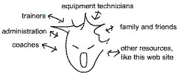

|
Welcome to Self Directed Coaching (SDC) Cyber Site.
This is a neuropsychology resource for elite athletes.
Here you will find neuropsychological resources for elite atheletes to aid in motor
learning and performing. This site uses differential psychology, which studies
individual differences in behaviour.Common reaction to sport psychology stuff: None-the-less, sport psychology is important because FOR THE BODY TO WORK RIGHT, THE WHOLE BRAIN AND NERVOUS SYSTEM MUST BE WORKING RIGHT. SELF DIRECTED COACHING FOR ELITE ATHLETES
Many international level athletes say "I'm pretty well on my own" when referring to the integration of resources into a progressive competitve package. Unfortunately, this touches the backbone of what coaching is all about: 
SDC DIRECTION IN SPORT PSYCHOLOGY
NEUROPSYCHOLOGY is "a science that seeks to integrate psychological observations on behaviour and the mind with neurological observations on the brain and nervous system." DIFFERENTIAL PSYCHOLOGY studies individual differences in behaviour.
Traditional services provided by a sport psychologist:
Traditional research in sport psychology:
In summary, the goal of this SDC site is to develop more explicit control over what an athlete is perceiving and how s/he is reacting in a sport situation (i.e. neuropsychology), along with consistent purpose and direction in training. (i.e. differential psychology) Most importantly, these ideas should work in a self-directed fashion, so the athlete is self-sufficient and in control. Specifically, SDC is a guide of questions athletes can ask themselves to find the solutions for better tournament performance. The focus is on the process (methodology), and not the end result; because for many elite athletes, setting a new standard means breaking into new ground which noone has defined yet. |